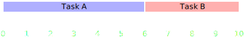

The JavaScript Event Loop
Presented by Thomas Hunter II (@tlhunter)
What does MultiThreaded mean?
- Makes use of separate CPU Cores as “Threads”
- Uses a single process within the Operating System
- True concurrency, lets you do two things at once
- Can have Race Conditions (simultaneous memory use)
- “Hard” to get it right
- Ran out of Ghz, hardware adds more cores
JavaScript is SingleThreaded
- Makes use of a single CPU core
- CPU intensive work is never “concurrent”
- Easier to pull off, as in less technical difficulties
Technical Implementation
-
Stack:
- Functions to run and available variables
- More added as code is run
- Stuff guaranteed to run in order
-
Heap:
- “Chaotic” listing of objects
-
Queue:
- Gets added to stack when stack empty
- setTimeout and setInterval added here
Example Code-run
function run() {
console.log("Adding code to the queue");
setTimeout(function c() { // Added somewhere in Heap
console.log("Running next code from queue");
}, 0);
function a(x) { // Added somewhere in Heap
console.log("a() frame added to stack");
b(x);
console.log("a() frame removed from stack");
}
function b(y) { // Added somewhere in Heap
console.log("b() frame added to stack");
console.log("Value passed in is " + y);
console.log("b() frame removed from stack");
}
a(42);
console.log("Ending work for this stack");
}
Output

- Adding code to the queue
- a() frame added to stack
- b() frame added to stack
- Value passed in is 42
- b() frame removed from stack
- a() frame removed from stack
- Ending work for this stack
- Running next code from queue
Your App is Mostly Asleep
- Node.js: All I/O is non-blocking
- E.g. it gets thrown into the Queue
- Browser: Wait for a click to happen
- PHP: Wait for a MySQL query to run
- These show how slow I/O can be →
- L1-Cache 3 cycles
- L2-Cache 14 cycles
- RAM 250 cycles
- Disk 41,000,000
- Network 240,000,000
Sequential vs Parallel
- Traditional web apps perform each I/O Sequentially
- With an Event Loop, they can be run in Parallel
- Since most time is wasted doing I/O, very inefficient
Series
Parallel

Event Loops are Awesome!
- No race conditions
- Typical web apps spend their time waiting on I/O
- No funky syntax; it just works
- Perform I/O operations “in parallel” easily
- Stateful web applications are easy compared to PHP
- Long run apps, don’t need web servers, shared data...
Event Loops aren’t Awesome!
- CPU intensive work will block your process
- You can offload work to different processes (Node.js)
- It isn’t making use of those 8 cores you’ve got
- You can use the Multi-node module though (Node.js)
- Memory leaks are possible, not so with PHP
- You can program better and prevent it though ;-)
...
...
Web Workers
- IE10, Firefox 3.5, Chrome 4, Safari 4, Opera 10.6
- Share simple JSON data, not complex objects
- Prevents deadlocks/race conditions because of this
// main.js
var worker = new Worker('task.js');
worker.postMessage({total: 5000000000});
worker.onmessage = function(e) {
console.log(e.data);
};
// task.js
onmessage = function(e) {
var total = 0;
for (var i = 0; i < e.total; i++) {
total += i;
}
postMessage(total);
};
Conclusion
- Great for I/O bound applications (most web apps)
- Horrible for CPU bound applications (do it in C)
- Appears to be a single multi-threaded process
- “Fakes” concurrency